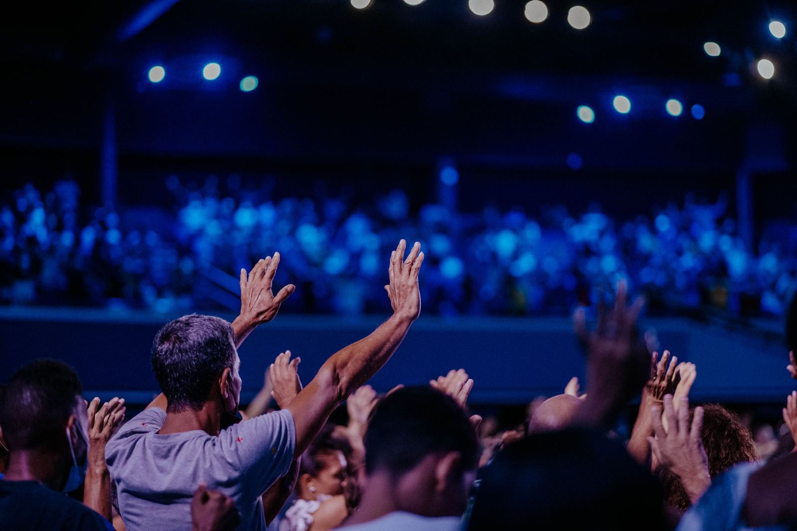
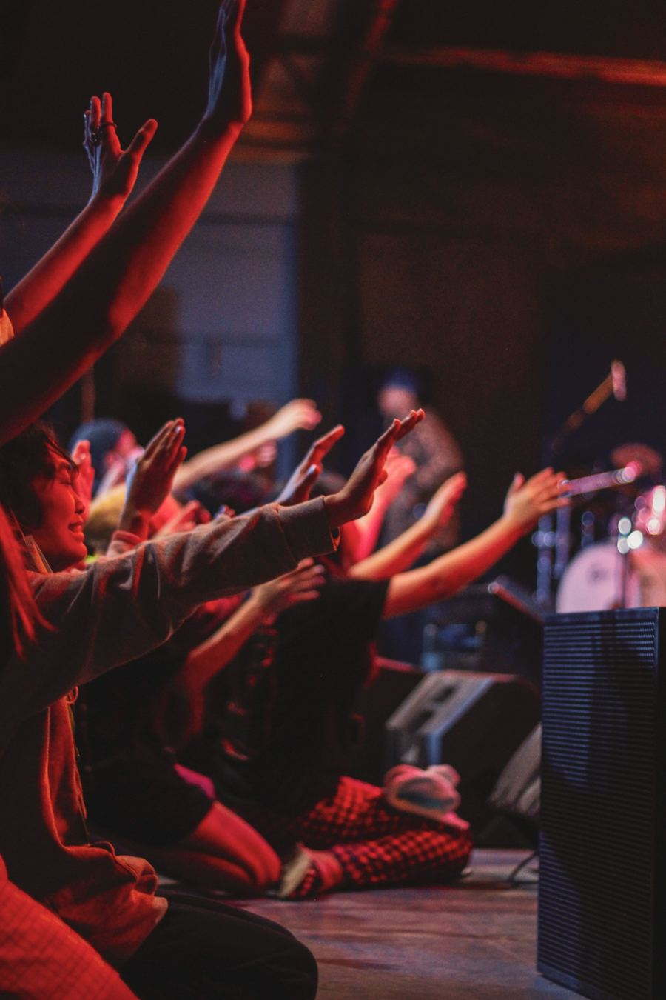
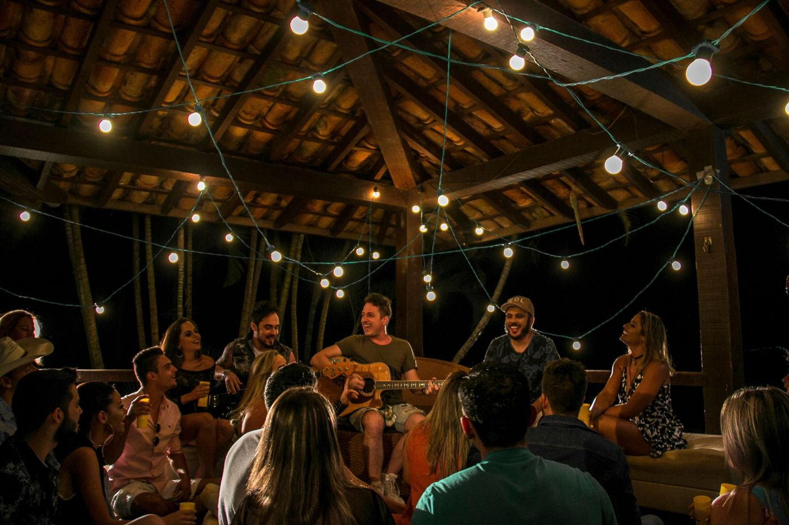
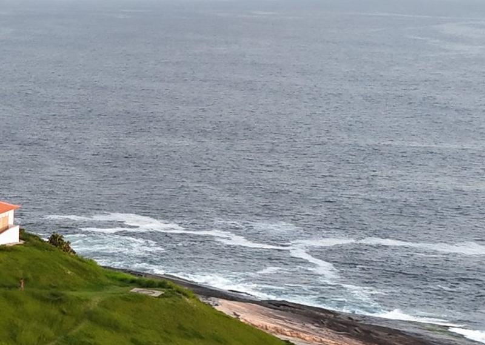
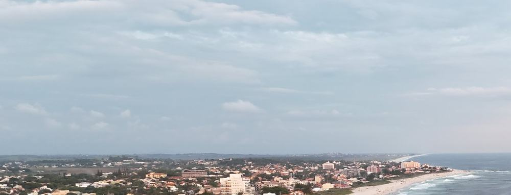

Um fim de semana para recomeçar
Três dias à beira-mar com louvor, palavra, oficinas e comunhão. Vagas limitadas pelo espaço do alojamento.
Programação
A programação final é publicada uma semana antes no Instagram da igreja.
Chegada e credenciamento
Retire sua pulseira e a chave do quarto.
Culto de abertura
Louvor e palavra de boas-vindas.
Noite na praia
Violão, conversa e oração na areia.
Oração ao nascer do sol
Encontro na orla, para quem quiser.
Oficinas
Jovens, casais e crianças em espaços separados.
Culto da noite
Ministração do pastor convidado.
Café e testemunhos
Tempo para compartilhar o que Deus fez no fim de semana.
Culto de encerramento
Santa ceia e envio.
Almoço e retorno
Saída dos ônibus às 15h.
Noites de louvor
Cultos à noite, oração no altar e roda de violão depois. Tudo registrado pela equipe de foto.


Três cultos, uma ceia
Sexta e sábado à noite, encerramento no domingo de manhã com santa ceia.
O lugar
Pé na areia, mar aberto e muito céu. As fotos são do drone da Lima Digital.


Fotos de você
Cobertura com câmera e drone. As fotos saem no Instagram da igreja.
Antes de ir
Local
[Nome do local], litoral do Rio de Janeiro. Ônibus saindo da igreja na sexta às 14h.
O que levar
Bíblia, roupa de cama, toalha, protetor solar e roupa de banho.
Crianças
Espaço kids com monitores para crianças de 3 a 10 anos, durante os cultos.
Garanta sua vaga
A inscrição leva um minuto. A confirmação chega no seu WhatsApp.
- 1Preencha seus dados
- 2Receba a confirmação no WhatsApp
- 3Apresente o nome na chegada